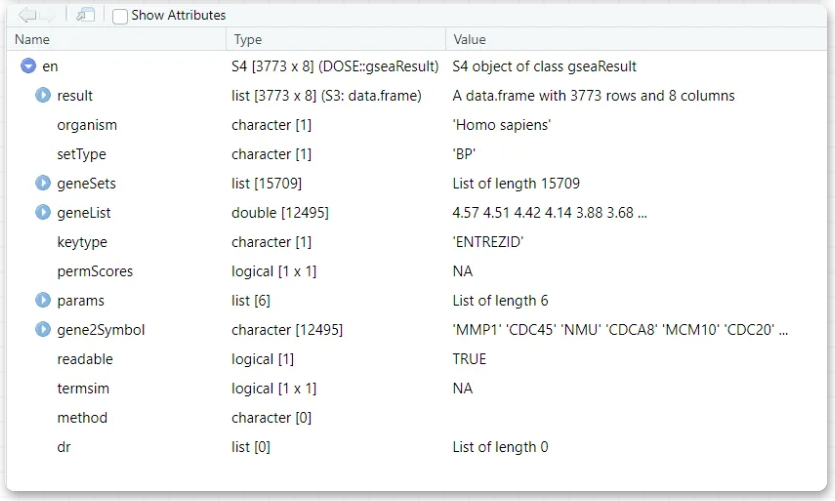
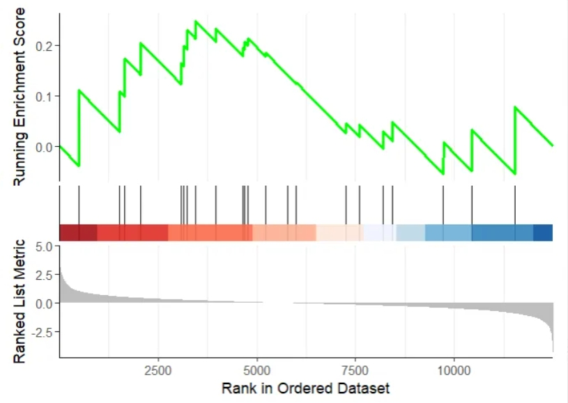
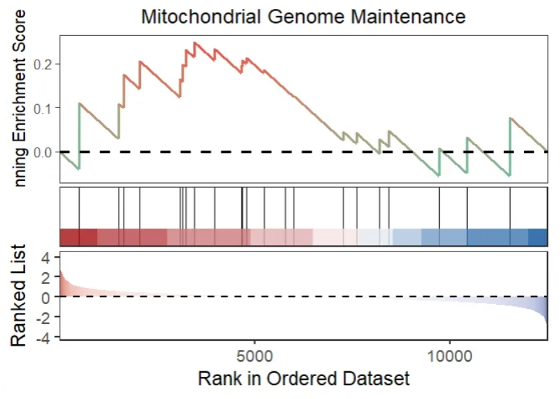

Chapter 10 Some utilties
10.1 fgsea visualization with GseaVis
library(fgsea)
library(msigdbr)
# load test data
data(geneList, package="DOSE")
msigdb.hs <- msigdbr(species = "Homo sapiens",
category = "C5",
subcategory = "BP") %>%
mutate(id = paste(gs_exact_source,gs_name,sep = "|"))
pathway_list <- msigdb.hs %>%
select(id, entrez_gene) %>%
as.data.frame() %>%
split(., .$id) %>%
lapply(., function(x)(x$entrez_gene))
# check
head(pathway_list,1)
# $`GO:0000002|GOBP_MITOCHONDRIAL_GENOME_MAINTENANCE`
# [1] 10000 10000 1763 2021 201163 3980 9361 4205 92667 4358 4976 142 80119 11232
# [15] 11232 10891 201973 83667 83667 84275 55186 291 219736 7156 7156 7157 1890
fgseaRes0 <- fgsea(pathways = pathway_list,
stats = geneList,
minSize = 15,
maxSize = 500)Convert into data frame which look like to gseGO/gseKEGG output:
fgseaRes <- fgseaRes0 %>%
tidyr::separate_wider_delim(pathway,delim = "|",names = c("ID","Description")) %>%
rowwise() %>%
mutate(leadingEdge =paste0(unlist(leadingEdge),collapse = "/"))
enrich_df <- data.frame(ID = fgseaRes$ID,
Description = fgseaRes$Description,
setSize = fgseaRes$size,
enrichmentScore = fgseaRes$ES,
NES = fgseaRes$NES,
pvalue = fgseaRes$pval,
p.adjust = fgseaRes$padj,
core_enrichment = fgseaRes$leadingEdge)
rownames(enrich_df) <- enrich_df$IDFinally we use dfGO2gseaResult to convert into gseaResult:
en <- GseaVis::dfGO2gseaResult(enrich.df = enrich_df,
geneList = geneList,
OrgDb = org.Hs.eg.db)
class(en)
# [1] "gseaResult"
# attr(,"package")
# [1] "DOSE"
en <- setReadable(x = en,OrgDb = org.Hs.eg.db,keyType = "ENTREZID")
Plot:

Plot:
